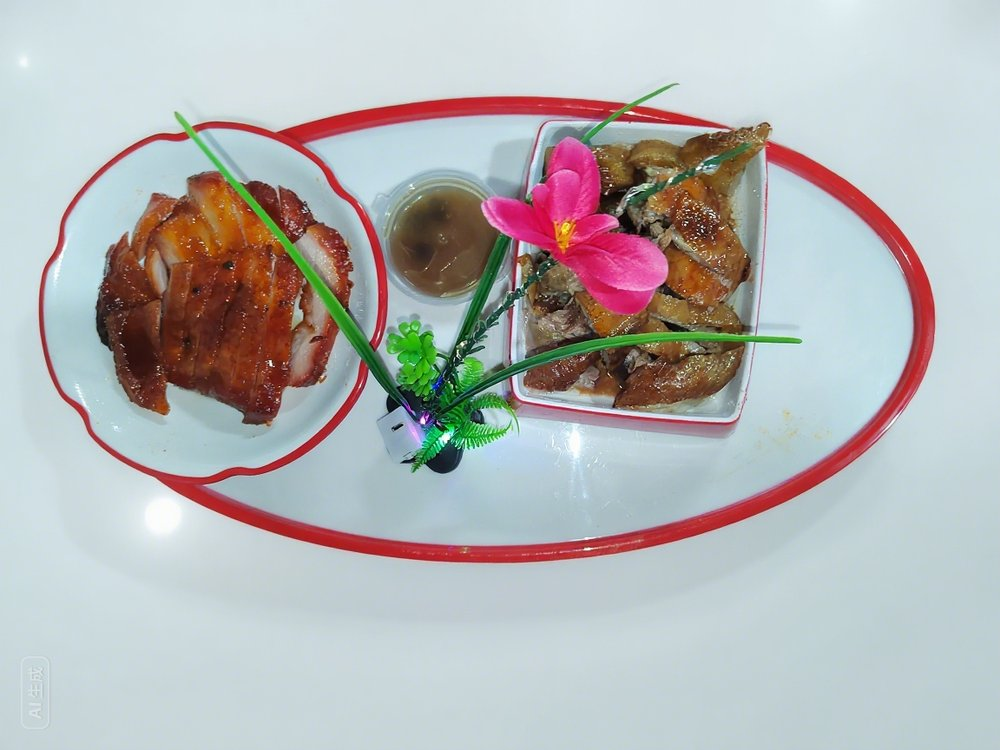
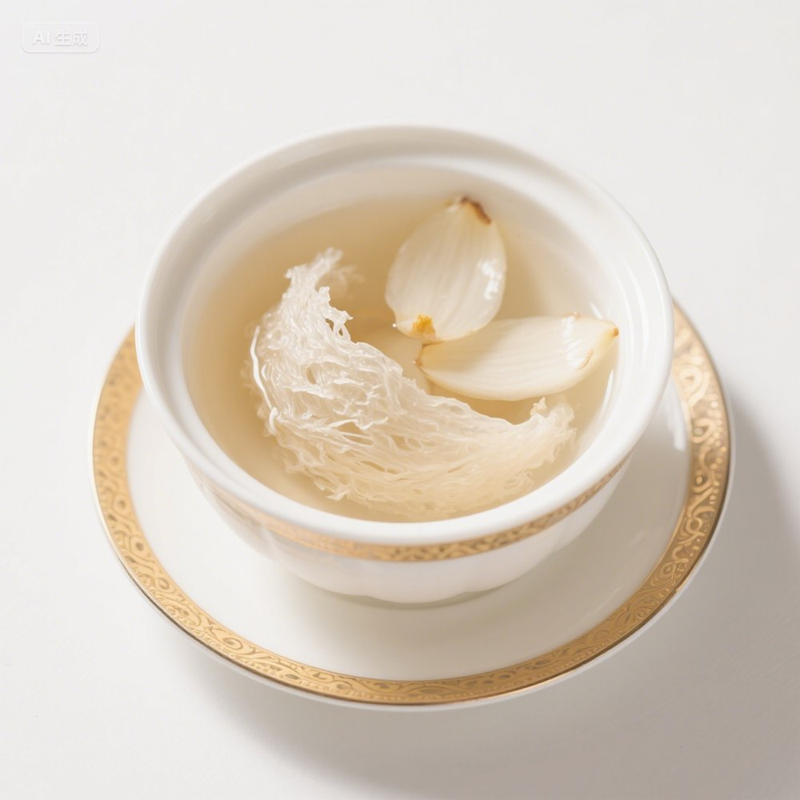

一席佳肴 · 静候相聚
宴席菜单 · 邀请访问
一席相聚，皆是美好。
请启用 JavaScript 后输入密码。
一席佳肴 · 一生好时光
从第一道开席小菜，到最后一口甜蜜。为重要的相聚，搭配一份专属菜单。


精心搭配
先选套餐，再按喜好调整
随心甄选
试试其他关键词，或切换分类。
专属宴席
本地维护
修改保存在当前浏览器。请通过“数据备份”导出，以便迁移或长期保存。
照片会自动缩小后保存。上传真实实拍后，请检查并清空已解决的待确认备注。
完整备份包含菜品、照片修改、餐厅设置和当前菜单，可在另一台设备上导入。
恢复默认资料会撤销本地菜品和餐厅设置的修改。建议先导出备份。
请启用 JavaScript 后使用菜单定制功能。